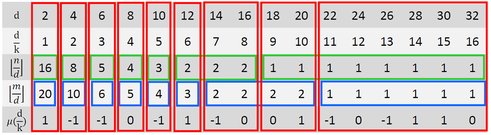

题目大意
对于给出的 $n$ 个询问，每次求有多少个数对 $(x,y) $ 满足 $a \leq x \leq b，c \leq y \leq d，且 (x,y) = k $。
解题报告：
这是我第一次做莫比乌斯反演的题目，从周日到现在一共五天才差不多弄懂……
容斥原理：
令 $ A(n,m) $ 表示 $ (x,y)=k, 1 \leq x \leq n, 1 \leq y \leq m $ 的个数，则
$$ ans = A(b,d) - A(a-1,d) - A(b,c-1) + A(a-1,c-1) $$
对于 $ A(n,m), n \leq m $：
令 $ F(k,n,m) $ 表示 $ k \mid (x,y), 1 \leq x \leq n, 1 \leq y \leq m $ 的个数
$ f(k,n,m) $ 表示 $ (x,y) =k, 1 \leq x \leq n, 1 \leq y \leq m $ 的个数
则有：
$$ F(k,n,m) = \sum_{k \mid d}^{n} f(d) $$
对于 $F(k,n,m)$ ，想要 $k \mid (x,y)$ ，必须满足 $ k \mid x $ 且 $ k \mid y $ ，那么就有：
$$ F(k,n,m) = \left\lfloor \frac{n}{k} \right\rfloor \left\lfloor \frac{m}{k} \right\rfloor $$
由莫比乌斯反演的变形得：
\begin{split}
f(k,n,m) &= \sum_{k \mid d}^{n} \mu(\frac{d}{k}) F(d,n,m) \\
&= \sum_{k \mid d}^{n} \mu\left(\frac{d}{k}\right) \left\lfloor \frac{n}{d} \right\rfloor \left\lfloor \frac{m}{d} \right\rfloor \\
\end{split}
而这样，对于每个询问的复杂度是 $O\left(\frac{n}{k}\right)$ 的，还是不能满分。
于是，就有了很厉害的分块算法 XD
当 $ n=32, m=40, k=2 $ 时，有：

其中，绿色部分为 $\left\lfloor \frac{n}{d} \right\rfloor$ 取值相同的区域，蓝色部分为 $\left\lfloor \frac{m}{d} \right\rfloor$取值相同的区域，而红色部分为两者分别取相同值的区域。
可以看出，只需将每个红色部分计算一次即可。而红色部分最多有 $ 2\sqrt{n} + 2\sqrt{m} $ 个，那么复杂度就降低为 $ O(\sqrt{n} + \sqrt{m}) $ 。
先计算出 $ \mu(d), 1 \leq d \leq n $ 的前缀和，然后分块。
当循环到 $i$ 时，要计算当前红色部分的结束位置 $j$ ：
- 先计算当前绿色部分的结束位置$j_1$，$j_1$是满足 $ \frac{n}{j1} = \left\lfloor \frac{n}{d} \right\rfloor $ 的最大值，那么 $ j_1 = \left\lfloor \frac{\large n}{\left\lfloor \frac{n}{d} \right\rfloor} \right\rfloor $
- 再计算当前蓝色部分的结束位置$j_2$，同理 $ j_2 = \left\lfloor \frac{\large m}{\left\lfloor \frac{m}{d} \right\rfloor} \right\rfloor $
- 那么 $j=min(j_1,j_2)$ 。
然后就可以计算 $i$:$j$ 的前缀和 $ = (s[j]-s[i]) \times \left\lfloor \frac{n}{d} \right\rfloor \left\lfloor \frac{m}{d} \right\rfloor $ 了。
分块代码 1：
1 | int f(int n, int m){ //(x,y)=k, 1<=x<=n, 1<=y<=m |
不过，还有更简单的分块方式。
对于 $ f(k,n,m) = (x,y) =k, 1 \leq x \leq n, 1 \leq y \leq n $ ，令 $ n=n_1k, m=m_1k $，有：
$$ (m_1,n_1)=1, 1 \leq m_1 \leq \left\lfloor \frac{m}{k} \right\rfloor, \leq n_1 \leq \left\lfloor \frac{n}{k} \right\rfloor $$
令 $ m’ = \left\lfloor \frac{m’}{k} \right\rfloor, n’ = \left\lfloor \frac{n}{k} \right\rfloor $
$$ \implies f(k,n,m) =f(1,n’,m’) = \sum_{d=1}^{n’} \mu(d) \left\lfloor \frac{n’}{d} \right\rfloor \left\lfloor \frac{m’}{d} \right\rfloor $$
那么在分块的时候就更容易了。
分块代码 2：
1 | int f(int n, int m){ //(x,y)=1, 1<=x<=(n/k), 1<=y<=(m/k) |
代码：
1 | const int MAX=50020; |